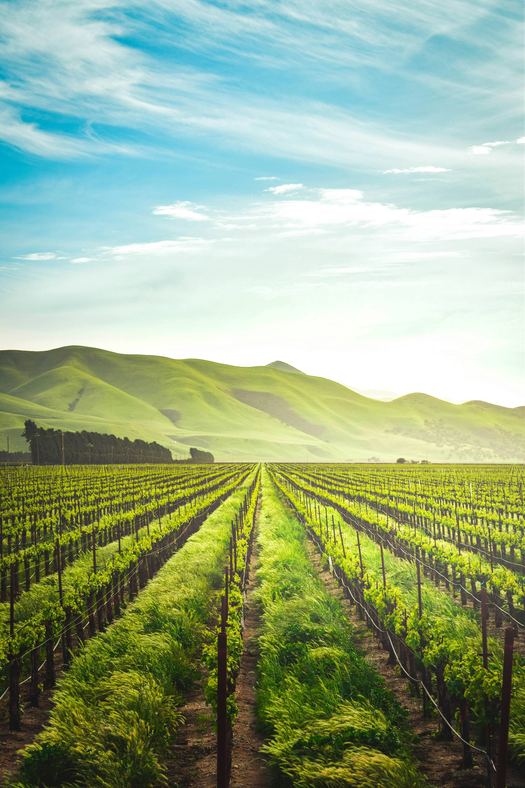

Finca monitoreada
FT-04

Transformamos la inspección visual manual en decisiones basadas en datos. Drones multiespectrales, sensores IoT y modelos de IA que detectan plagas y estrés hídrico antes de que se vean a simple vista.
AgroPredict desarrolla software para agricultura de precisión. Usamos drones, sensores IoT e inteligencia artificial para monitorear cultivos y llevar a los productores de la inspección visual manual a una gestión basada en datos reales, mapas de calor y pronósticos de rinde.
Nacimos en Tucumán y trabajamos junto a instituciones locales como la EEAOC y el Clúster Tecnológico. Esa cercanía con el productor y el soporte técnico en terreno son nuestro diferencial frente a las consultoras externas.
Entregamos software funcional y confiable con metodologías ágiles, para que quienes trabajan el campo no se queden atrás en los periodos de mayor actividad fitosanitaria.
Brindar herramientas tecnológicas accesibles al productor tucumano para mejorar el control de sus cultivos con drones y sensores, facilitando la detección temprana de problemas y optimizando el uso de recursos.
Liderar la transformación digital del sector agroindustrial de Tucumán, destacándonos por la cercanía con el productor y la facilidad de uso de nuestras herramientas.
Trabajamos con productores y empresas agrícolas de las economías regionales del NOA que buscan aumentar la productividad y cuidar sus insumos con evidencia, no con conjeturas.
Detección temprana de plagas y estrés en limón y cítricos, el motor exportador de la provincia.
Monitoreo de grandes superficies y control de estrés hídrico en plena zafra.
Mapas de rinde y alertas para optimizar riego, fertilización y aplicaciones.
Dashboards y reportes semanales para equipos que gestionan varias fincas a la vez.
Capturamos, procesamos y traducimos los datos del campo en información que el productor puede usar desde una tablet, en la oficina o a pie de finca.
Relevamiento aéreo de alta precisión para generar bancos de imágenes que alimentan el análisis y el entrenamiento de la IA.
Instalación y calibración de sensores de humedad y temperatura que envían datos continuos al sistema de alertas.
Modelos de visión artificial que identifican plagas y estrés hídrico antes de que sean visibles, con validación cruzada en terreno.
Interfaces simples, optimizadas para tablets en el campo, con mapas de calor y reportes críticos semanales.
Notificaciones push y pronósticos que integran datos de la EEAOC y estaciones meteorológicas para decidir a tiempo.
Un relevamiento a bajo costo que demuestra el valor del reporte antes de contratar el servicio completo.
Las alianzas locales nos dan validación, conocimiento del terreno y cercanía real con quienes producen.
Respaldo institucional y alianzas comerciales con empresas de base tecnológica de la provincia.
Vínculo con talento en ingeniería y desarrollo, y marco académico para la formación del equipo.
Datos, normativas y validación técnica del sector para mejorar la precisión de nuestros modelos.
Contanos sobre tu finca y coordinamos un relevamiento para mostrarte, con datos reales, qué está pasando en tus cultivos.